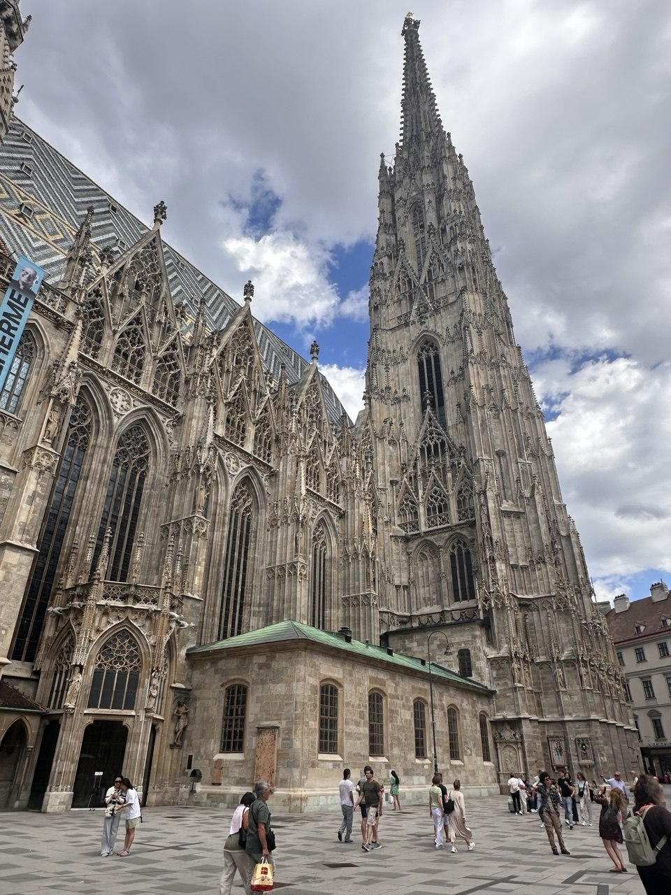

Загальна інформація

Коротка характеристика: Велична столиця Австрії, відома своєю імперською архітектурою, класичною музикою, музеями та розкішними палацами.
Чому це місто у моєму списку: Відень має для мене особливе значення, адже я відвідала його під час свого дня народження. Подорож до цього величного європейського міста стала незабутнім подарунком та залишила яскраві враження на все життя.
Цікаві факти
- Відень багаторазово визнавали найзручнішим і найкомфортнішим містом для життя у світі.
- У Відні розташований найстаріший у світі зоопарк Шенбрунн, заснований ще у 1752 році.
- Віденська кавова культура визнана нематеріальною культурною спадщиною ЮНЕСКО.
Визначні місця
- Собор Святого Стефана (Штефансдом)
- Імператорський палац Шенбрунн
- Палацовий комплекс Бельведер
- Віденська державна опера
Особиста оцінка
Оцінка: 10/10 — місто особливих спогадів та неймовірної краси.
Дізнатися більше: Відень у Вікіпедії